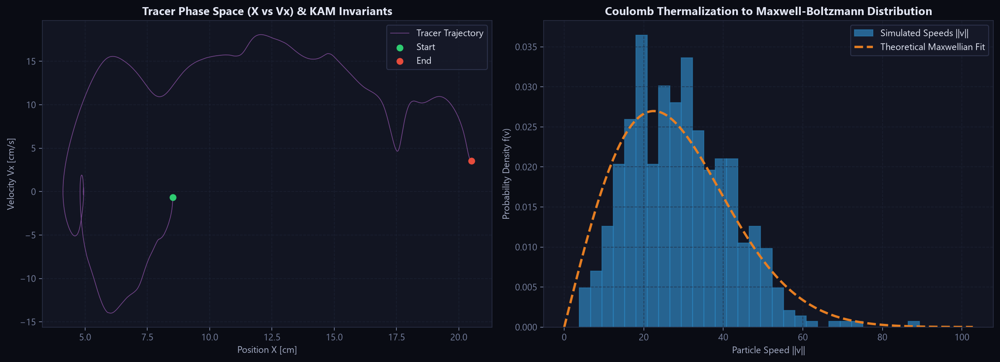

A high-performance N-body electromagnetic plasma confinement engine — symplectic Boris integration, Barnes-Hut quadtrees & octrees, and a real-time PyQt6 dashboard for tokamak, mirror, fusor and E × B regimes.
This is a faithful JavaScript port of the project's core physics — the same symplectic Boris integrator, the same tokamak / fusor / E × B field models and the same softened Coulomb solver that power the Python package. Change the preset, crank the magnetic field, watch the energy telemetry and the Maxwell-Boltzmann distribution.
1.0×
500
steps 0 · ΔE/E₀ 0.0e+0
PLASMA CONFINEMENT SANDBOX
SYMPLECTIC ENERGY TELEMETRY
MAXWELL-BOLTZMANN SPEED DISTRIBUTION
Loading…
Demo
The dashboard, running for real
A 20-second capture of the actual PyQt6 application — not a mock-up. The desktop dashboard steps the real engine, switching between the tokamak poloidal slice, magnetic mirror, IEC fusor, E × B drift and the classic electrostatic sandbox.
Capabilities
What the engine does
Everything is vectorised with Numba njit and JIT-cached, so the heavy inner loops run at compiled speed while the physics stays readable Python.
01 · INTEGRATOR
Symplectic Boris scheme
The gold-standard phase-space-conserving integrator for charged particles under F = q(E + v × B), with a split electric push and an exact magnetic rotation. Long-run energy drift stays near machine-noise instead of diverging like forward Euler.
02 · SOLVERS
Barnes-Hut trees & direct
Quadtrees (2D) and octrees (3D) bring the Coulomb sum to O(N log N) with a tunable opening angle θ, alongside an exact O(N²) direct solver used as ground truth and for small systems.
03 · FIELDS
Confined-field models
Tokamak torus (toroidal + poloidal with a real safety-factor q(r)), 2D poloidal slice, magnetic mirror bottle, Farnsworth-Hirsch fusor and orthogonal E × B drift.
04 · DASHBOARD
Real-time PyQt6 telemetry
A dark-mode dashboard with live particle confinement, tracer orbits, symplectic energy curves and a Maxwell-Boltzmann speed histogram — with play/pause, stepping, B-field and dt controls.
05 · CLI
Headless runner & benchmarks
Run any preset without a display, save diagnostic figures, list presets and benchmark Barnes-Hut against direct summation — all from python main.py.
06 · PHYSICS
2D-3V and 3D-3V
Out-of-plane velocity components undergo the full Lorentz rotation in 2D, and toroidal / spherical / circular kinematic limiters enforce first-wall confinement in both dimensions.
Regimes
Six ready-made plasma presets
Each preset bundles a field configuration, geometry, species mix and numerical parameters, so you can move from one confinement regime to another in a single argument.
Preset
Dim
Field model
Boundary
Particles
kₑ
v_th
tokamak_2d
2D
Poloidal tokamak slice
Circular
600
300
30
tokamak_3d
3D
Toroidal + poloidal torus
Toroidal
500
200
25
magnetic_mirror
3D
Magnetic bottle trap
Spherical
400
100
20
fusor
2D
IEC electrostatic well
Circular
600
500
5
exb_drift
2D
Uniform E ⊥ B
Circular
400
50
15
classic_2d
2D
Self-consistent (no external)
Circular
1000
1000
0
Helical field topology, flux surfaces, a trapped-ion banana orbit and the safety-factor profile q(r).Four regimes side by side: tokamak slice, magnetic mirror, IEC fusor and E × B drift.
Performance
Barnes-Hut vs. direct summation
Measured on CPU with the built-in benchmark (python main.py benchmark, θ = 0.25). The tree method overtakes exact summation around N ≈ 1000 and holds a ~2.5–2.9× lead at larger N, while the relative force error stays below ~1.3 × 10⁻².
N
Direct (ms)
Barnes-Hut (ms)
Speedup
Rel. error
100
0.44
0.66
0.66×
2.4e-3
250
1.47
1.24
1.18×
1.9e-3
500
1.81
2.31
0.78×
4.1e-3
1000
13.67
5.51
2.48×
4.5e-3
2000
46.22
15.83
2.92×
1.7e-2
4000
133.52
53.01
2.52×
1.3e-2
Execution time per step and relative force error versus particle count.
Symplectic Boris holds energy flat; a non-symplectic Euler scheme diverges exponentially.

Tracer phase space and Coulomb thermalisation onto a Maxwell-Boltzmann distribution.
Get started
Install and run
Requires Python 3.10+. The dashboard needs PyQt6/PyQtGraph; the headless CLI and tests run anywhere.
install
# clone and install dependencies
git clone https://github.com/rajveersinh-is-dev/Tokamak-Py.git
cd Tokamak-Py
pip install -r requirements.txt
# launch the interactive dashboard
python main.py
headless CLI
# run a preset and save a diagnostic figure
python main.py run -p tokamak_2d -n 600 -s 800 -o fig.png
# list presets, benchmark the solvers
python main.py presets
python main.py benchmark --save-chart bench.png
python
from tokamak_py import PhysicsEngine
engine = PhysicsEngine(preset="tokamak_2d", n_particles=600, solver="barnes_hut")
for _ in range(500):
engine.step()
print(engine.kinetic_energy, engine.potential_energy)
print("relative energy drift:", engine.get_relative_energy_drift())
Under the hood
Module map
The package is split into single-responsibility modules so the physics, the numerical kernels and the UI evolve independently.
Module
Responsibility
engine.py
PhysicsEngine — ties fields, solvers and integrators into a steppable simulation with energy telemetry
fields.py
Numba field kernels: tokamak 2D/3D, magnetic mirror, IEC fusor, E × B, plus zero-field
integrators.py
Symplectic Boris step (2D-3V and 3D-3V) and the kinematic boundary limiters
quadtree.py / octree.py
Barnes-Hut tree construction and force traversal in 2D and 3D
direct.py
Exact O(N²) Coulomb force and potential-energy summation
presets.py
Named physical scenarios bundling geometry, fields and numerical parameters
gui*.py
PyQt6 / PyQtGraph dashboard, control toolbar and telemetry plots
cli.py
Headless run, benchmark and preset-listing subcommands